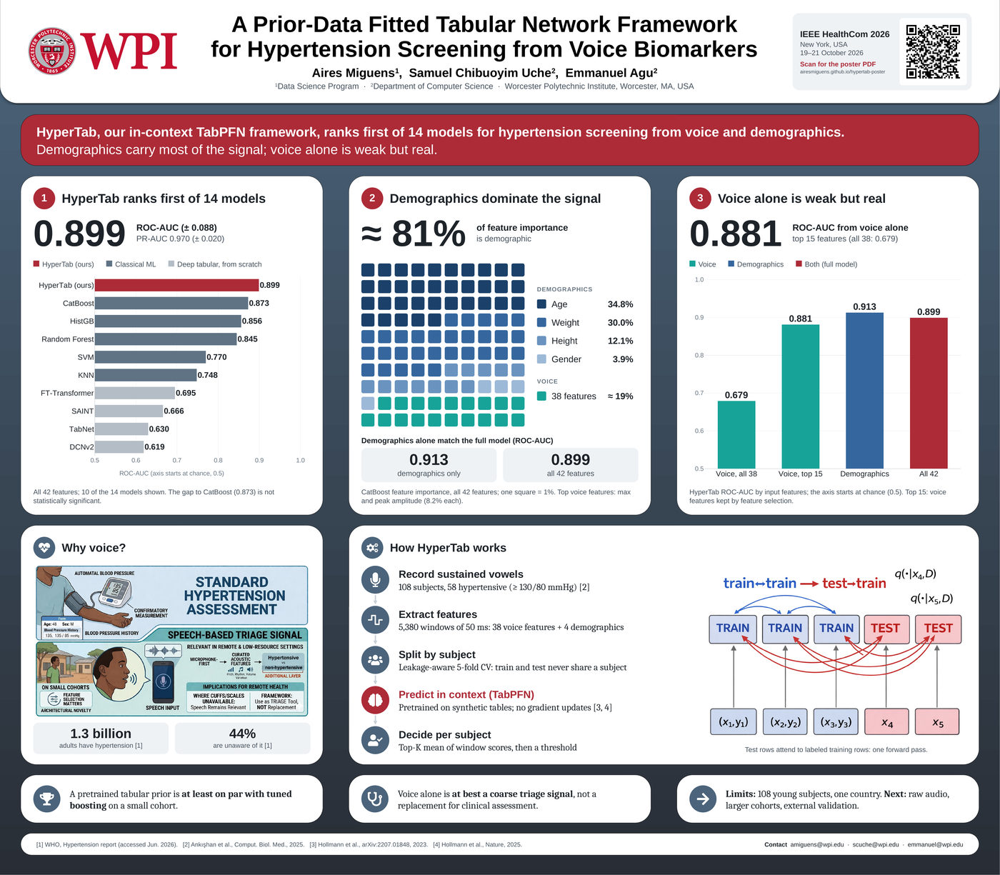

0.899
HyperTab ranks first of 14 models
ROC-AUC 0.899 (± 0.088) and PR-AUC 0.970 (± 0.020) on all 42 features. CatBoost is closest (0.873); the gap is not statistically significant.
Poster · IEEE HealthCom 2026 New York · 19–21 October 2026
1Data Science Program · 2Department of Computer Science
Worcester Polytechnic Institute, Worcester, MA, USA
HyperTab, our in-context TabPFN framework, ranks first of 14 models for hypertension screening from voice and demographics. Demographics carry most of the signal; voice alone is weak but real.

0.899
ROC-AUC 0.899 (± 0.088) and PR-AUC 0.970 (± 0.020) on all 42 features. CatBoost is closest (0.873); the gap is not statistically significant.
≈ 81%
Share of feature importance: age 34.8%, weight 30.0%, height 12.1%, gender 3.9%. Demographics alone (0.913) match the full model (0.899).
0.881
ROC-AUC from voice alone with the top 15 voice features; 0.679 with all 38.
About 1.3 billion adults have hypertension and 44% are unaware of it. Cuff-based screening needs equipment and access; speech can be recorded on a phone.